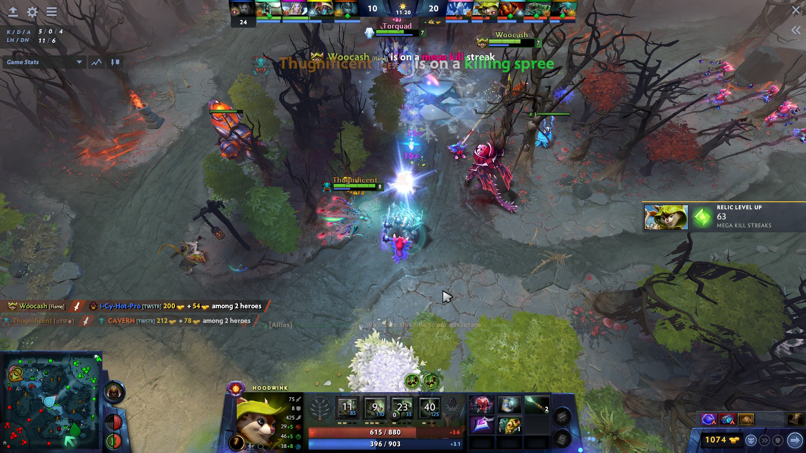
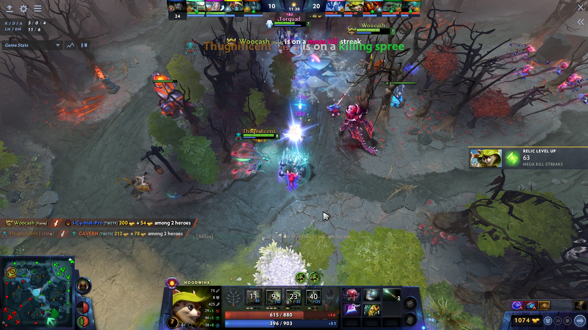

Gameplay
Cada jugador controla un héroe, un personaje con habilidades y características únicas que pueden ser mejoradas a lo largo de la partida a través de la obtención de oro y experiencia. El mapa de Dota 2 está dividido en tres carriles, cada uno de los cuales está protegido por torres y unidades defensivas conocidas como "creeps". Los héroes deben avanzar por los carriles y luchar contra los creeps y torres enemigas para llegar a la base enemiga y destruir la "Ancient". El juego se basa en la estrategia y la coordinación de equipo, ya que los jugadores deben trabajar juntos para planificar y ejecutar estrategias que les permitan superar a sus rivales y alcanzar la victoria. Cada héroe tiene habilidades únicas y roles específicos, por lo que la elección del equipo y la estrategia de juego son fundamentales para el éxito.


 

¿Ya conocías o jugabas Dota 2 con anterioridad? Si es así y tienes ganas de jugar con gente de otros lugares, en el siguiente botón podras dejar tu informacion y encontrar gente de tu nivel.
Agrega tus datos
Opiniones
Aqui te dejo algunas reseñas de diferentes personas que jugaron este gran juego
| Nombre | Comentario |
|---|---|
| Pablo | Trae a tus amigos y forma un grupo. Dota es complejo y evoluciona constantemente, pero nunca es tarde para unirse. Aprende los conceptos básicos jugando en modo cooperativo contra bots. Mejora tus habilidades en el modo de prueba de héroes. Adéntrate en el sistema de emparejamiento basado en el comportamiento y la habilidad que se encarga de hacer que juegues con los jugadores adecuados en cada partida. |